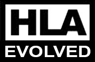

Welcome to the home of Portico - the most popular and widely deployed open source RTI, designed to support the growth and expansion of the HLA.
An RTI is the core infrastructure of the HLA - without it, you don't have a simulation. Portico was born out of frustration at the lack of a viable, free option to support research and development. From its beginnings as a side project of postgrad students at the University of Ballarat in Australia, Portico has grown and matured thanks to support from its community and through funding from government and commercial partners.
"If commercial viability is a defacto entry criteria for any technology, true innovation ceases. Industry as a whole carries that burden - both as an immediate financial penalty, but mostly importantly and as opportunity cost over the long term. Whether intentional or not, the resulting 'empty nest' effect is the same.
Open and free infrastructure tools support open standards in ways that commercial options simply can't. Open Source don't destroy infrastructure markets, it sustains them."
Open standards reduce barriers-to-entry and facilitiate collaboration by giving communities a common platform to build on. Open access underpins and drives innovation by letting users with varied interests and requirements leverage a collective effort to solve common problems so that they can focus on the novel and valuable aspects of their work.
A rising tide lifts all boats, and open infrasturcture standards have been particularly successful at letting users focus on the ways they can add value rather than burning time reinventing the wheel. Walled Garden Ecosystems underpinned soley by high-cost commercial infrastructure do not grow and thrive the way that those also supported by more egalitarian options do.
Without readily available options for those who don't have the commercial means to buy their way into the benefits of open standards, entire groups of contributors are lost. Innovation stagnates without the injection of activity from a larger group with differing needs and limitations. Evolution is constrained by the world-view of the early drivers while industry quietly and unilaterally moves on.
Free and open access to support a varied community, from the university lab to production environments. This is why Portico exists.
Portico began as a side project for our two core contributors, Tim and Michael, during their time as honours and postgrad students in the University of Ballarat's Distributed Simulation Lab.
Since then the project has had a number of additional contributors, both through the support of Calytrix Technologies, and from the Portico user community.
Tim is the lead developer for Portico and one of its founders. He is the CTO at Calytrix Technologies, managing technical direction and the development of their suite of products. When he's not busy enjoying the Perth sunhine or indulging in a Margarita he can be found laying somewhere quiet, thinking about these things.
Michael is a Portico founder and a Senior Software Engineer at Calytrix Technologies leading the development of the CNR radio simulation product suite. Clearly personified by an unnatrual lust for Louisiana Blackened steak and shed building, Michael aspires to communicate in nothing but Internet meme, but ain't nobody got time for that.
Portico is developed by a group of brainy yet oddly attractive people. Whether you have aspirations to be a core contributor, are simply interested in getting a particular bug fixed or have just found a really annoying typo in our documentation, contributing is easy. What say you?
Like all good tech-industry stories, Portico starts on a university campus with a bunch of restless undergrads. That’s pretty much where the resemblance to Facebook ends. Rather than fortune, fame and movies, this group of mugs decided to write an RTI – the least sexy of all software, even by the already unattractive standard of infrastructure tools. If only we’d limited all attribute reflections to 140 bytes! Sorry – that is a truly horrible joke. Despite that handicap, the project has gone on to receive both community support and industry funding, growing into something we think is not only useful, but an importance presence in the HLA-ecosystem. This is the story of how it came together.
Portico began as a side project for its two founders during their time as students in the University of Ballarat's Distributed Simulation Lab. Frustrated by the lack of an affordable cross-platform RTI that could be used to support their research projects, in late 2005 they began writing their own.
The project was initially named jaRTI, and after a considerable amount of internal development the first public release was launched during the Australian SimTecT conference in June of 2006. It initially provided support for the core data exchange services of the HLA v1.3 interface and provided only a Java API.
Following its initial release, jaRTI development continued to advance, with additional features, services and tools being added over the next year. Further development assistance was added to the project through Lance Burns, another UoB student.
The project was well received and through its initial year it was downloaded more than 1,300 times. As interest grew, the team put in place a more professional and structured approach in order to maintain long-term grown of the project.
Additional community support services were added through mailing lists and forums, and formal contribution policies were drafted. A significant effort was undertaken to document the software architecture and API, and a continuous integration environment was deployed.
As part of this process an image change was deemed necessary, and in May 2007 the Portico Project was founded. To help these transition activities, Portico received formal funding from the then Australian Defence Simulation Office (ADSO) which is now part of the Australian Defence Simulation and Training Centre (ADSTC). This work was carried out under contract with Calytrix Technologies.
Further work was undertaken to expand the supported HLA services and a C++ interface. Subsequent funding was provided by ADSO to perform various updates to the infrastructure and integrate Portico into the Defence Synthetic Environment (DSE) as a supported HLA RTI option.
Through the DSE, ADSO wished to deliver the concept of "Training-in-a-Box", comprising of a common set of simulation applications, pre-validated and configured to operate together, thus reducing the overall burden required to deploy and maintain. Integrating a commercial RTI to support the HLA profile gave rise to significant and costly licensing problems during distribution. Able to be freely distributed, Portico was funded to overcome these issues.
At the conclusion of these activities Portico had implemented the major HLA v1.3 services commonly used to support Live, Virtual and Constructive training tools, and included interfaces for:
Portico was integrated into the DSE as the default RTI option for the Training-in-a-Box and Experimentation-in-a-Box packages.
Portico v1.0 was released on the 27th of May, 2009. It included a significant rearchitecture of the communications framework, changing the RTI to operate in a peer-to-peer mode and yielding vastly improved performance. ADSO continued support of the project and funded a performance analysis of the new and old versions of Portico compared to the defacto HLA v1.3 standard RTI-NG implementation which can be found here.
Following the release of Portico v1.0, interest turned to the IEEE-1516 standard. An initial implementation of the Java interface was put in place, supporting the base services of theIEEE-1516 standard and the SISO Dynamic Link Compatibility standard:
Over this period, Portico deployment numbers rose significatly. It surpassed 10,000 downloads in September 2011, with users accessing it from over 40 countries. Portico was being used to assist teaching within universities as well as supporting reserach project that leveraged the HLA. It is commonly used in projects and experiments that are published through conferences and journals. It is being used to support training and experimentation activities and as a low-cost capability development tool - postponing the purchase of expensive commercial RTI licenses until they are absolutely required.
During this time Portico's lead developer, Dr. Tim Pokorny became the CTO of the Australian simulation and training company, Calytrix Technologies. Michael Fraser, the other half of Portico's core development team was also hired into the company and is currently a Senior Software Engineer. Through their involvement with Portico, Calytrix have continued to support development and provided dedicated time for employees to contribute. Calytrix have also ensured compatibility of their product lines with Portico, advocating its continued adoption.

In early 2012 Portico received additional funding from Thales to put in place the first incarnation of the recently ratified IEEE 1516-2010 standard: "HLA Evolved". Under this project, the core information exchange services were developed and key parts of the updated specification (such as modular FOM support) were added.
Portico v2.0 was released on April 1st, 2013 and now had baseline support for all major interations of the HLA standards as well as broad compiler and cross-platform support.
To this day almost 15,000 copies of the software have been downloaded over its lifetime, reaching users in over 60 countries. The core Portico repository weighs in at over 200,000 lines of code in a mix of Java, C and C++, and has received contributions from 11 different developers (a number we hope to grow!).

Snoop Dogg says with all the latest Portico news delivered direct to your mailbox, you'll have everything you need to stand out from the crowd. Impress collegues, woo potential partners, make your Mum proud.